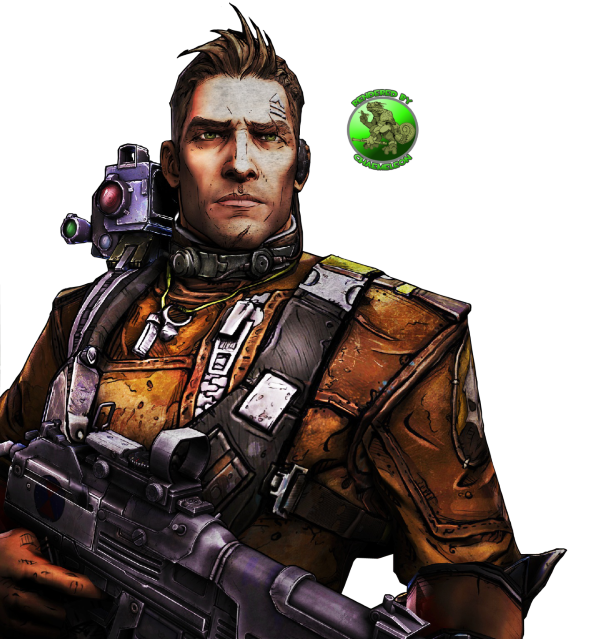

Axton
The Commando
Axton is a new playable character in Borderlands 2, serving the role of the Commando class. He used to be a soldier in the Dahl corporation's military. However, his glory-seeking recklessness and constant disregard for orders earned him a scheduled execution. Despite being forced to leave his outfit (and his wife), Axton remains a gung-ho soldier. He fights his enemies and supports his teammates with equal enthusiasm.
Only On
Steam
.png)
Maya
The Siren
As an infant, Maya was identified as a Siren and given to the Order of the Impending Storm, the ruling order of monks on her homeworld of Athenas. She trained her Siren powers in secret until she reached adulthood, when the monks revealed her to the public as their goddess and savior. Irritated by the Order's short leash, she longed for adventure and expressed interest in traveling to Pandora to learn more about her Siren lineage. She eventually realized that the Order was using her as a threat to extort money and obedience from the people of Athenas. After Phaselocking and executing her handler Brother Sophis, she headed to Pandora to finally satisfy her curiosity about Sirens.
Available Now
Get three times the mayhem, three times the loot, and three times the action with the Borderlands Legendary Collection! Kill bandits and beasts, collect powerful weaponry, and maybe even save the universe in Borderlands: Game of the Year Edition, Borderlands 2, and Borderlands: The Pre-Sequel.
Salvador
The Gunzerker
Despite his love for excessive violence being aimed towards bandits and criminals, Salvador was nonetheless about to be executed by the people of his own hometown of Ovejas for his actions when a Hyperion strike team arrived to seize the town. After destroying the invading forces, Salvador becomes interested in the new Vault upon hearing of its dangers while "interrogating" the last survivor of the strike team and leaving him to crawl back to Hyperion on a single arm (as Salvador had ripped off his other arm and broken both his legs).


Zero
The Number
Zer0 is an assassin for hire. According to his wanted poster and his personal ECHO recordings, he performs both political assassinations and common hits. Following a particularly unsatisfying assassination where the target fails to fight back, despite being encouraged by Zer0 to do so, the assassin starts to look for a more challenging environment. He travels to Pandora after hearing of the Vault from a bartender, deeming the hunt as worthy of his skills.